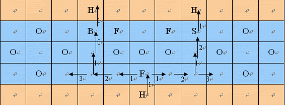

这里是通向海边的秘密通道
来到这里的人必定身处危难
来到这里的人注定命运多舛
可是想从这里通过，不幸不能成为理由，只有你的智慧能拯救你
这里有一个N行M列的方阵，第N行象征着这里，第1行象征着海那边的彼岸。这中间的N-2行象征着你所期盼的大海。
你的目标是，控制一艘船，从这里的任意一个停泊处（用“H”表示），经过最短的航行时间到达对岸的任意一个停泊处。只有这样，你才可以通过这个通道。
你的船只能向左，向右或向上前进，一次一格，而且除非登陆（这时你必须到达一个停泊处，从而结束你的游戏），你是不能驶向陆地的。
记住，人生没有回头路。因此，一旦你离开一个格子，就永远也无法返回，永远……
向着目标航行永远是一件令人愉快的事情。因此向上航行只需要消耗一个单位的时间。但是，看似原地打转的左右方向的航行会让人厌倦。如果某次左右航行之前你已经连续进行了x次左右航行，你这次左右航行所消耗的时间就是x+1个时间单位。
海上你可能会遇到：
O：障碍物。障碍物占据的格子，你永远也不会到达。
F：命运之轮。经过这里，你的命运会从此逆转。我了解你的命运有多么不幸。因此，你必须在航行途中经过奇数次命运之轮，才能安全到达彼岸。
B：祝福石。走到这里是不需要时间的。
S：暴风雨的咒符。走到这里所需的时间是正常情况的两倍。
记住，三思而后行。你只有一次机会。
生存，或者死亡。全掌握在你的手中，不，是心中。
（下面是一个例子，箭头标出了部分路线，并没有把可走的路全部标出）

第一行两个正整数N和M，N,M≤1000，N≥3。
后面有N行，每行M个字符，“H”“O”“F”“B”“S”分别对应着前面的介绍。如果一个格子什么都没有，那个格子用一个“.”表示。H只会出现在第1行和最后一行（因为是陆地），“O”“F”“B”“S”只会出现在中间的N-2行（因为是水域）。
样例数据就是前面背景部分中那个例子。
数据范围
对于40%的数据，M≤50，
对于50%的数据，N≤500，
对于100%的数据，N,M≤1000。